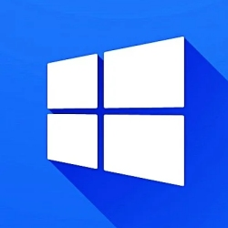

Mes
Compétences
en développement
The development
Skills
Voici une brève liste de mes compétences en développement logiciel pour vous accompagner sur vos projets en mode assistance technique comme en mode projet forfaitisé
Here is a short list of my software development skills to support you all along your projects in staff delegation or in full project mode.

Le développement logiciel sous MS Windows
Tout au long de mes 20 ans de carrière j'ai régulièrement designé et développé des solutions sur plateforme MS Windows, à travers des frameworks comme Microsoft .NET, Delphi ou Windev.Ainsi, avec la maîtrise de ces outils, j'ai eu la chance de me voir confié la réalisation d'un certain nombre d'applications de type Winform, de services NT, d'assembly, de composants OLE et autres Webservices (SOAP ou REST)
The software development on MS Window
All along my 20 years carreer, I had to design and develop some MS Window platform solutions, thanks to powerfull framework like Microsoft .NET, Delphi or Windev.So, among other things, I created a certain number of applications such as Winform GUI type, NT services, assembly, OLE components and other Webservices thanks to these frameworks.
Le développement d'application web
A travers les missions qui m'ont été confiées j'ai eu la chance de pouvoir accompagner des clients dans la réalisation complète de sites et d'applications web complexes. De plus, le développement web a toujours été pour moi la partie la plus passionnante du développement moderne, et je crois fortement que la tendance du "All WebApp" a de beaux jours devant elle.Côté front-end d'abord, je maitrîse bien les standards que sont HTML et CSS. Côté langage de programmation, je travaille avec Javascript depuis plus de 15 ans, que ce soit à travers des applications web, ou au coeur d'un gros progiciel de gestion d'atelier de cartes à puces. Aussi, je me suis aussi intéressé plus personnellement à un framework Javascript qui allie simplicité et performance : Vue.JS (v3.0)
Côté back-end ensuite, j'ai longtemps utilisé PHP à la fois pour quelques projets qui m'avaient été confiés, mais aussi à titre personnel pour notamment la réalisation d'une application de gestion de championnat de poker. A titre personnel, j'ai travaillé aussi un certain temps sur des projets de taille modeste en utilisant le framework Symfony 5.x Toujours côté back-end et plus récemment, j'ai eu aussi la chance de travailler avec ASP.NET (Core ou non) pour la réalisation d'applications complètes ou de services web type REST.
The web application development
Thanks to the many missions entrusted to me, I had the chance to support clients in the development of websites as well as complete web applications. Moreover, web development has always been for me the most passionate part of modern development, and I strongly believe that the "All WebApp" trend has a bright future ahead of it.On the front-end side first, I master the web basics of HTML and CSS. On the programming language side, I have been working with JavaScript for more than 15 years, whether through web applications, or at the heart of a large smart card workshop management software package. Moreover, I am personaly interesting to a new Javascript framework which bind ease and power : Vue.JS (v3.0)
On the back-end side then, I used PHP for a long time both for a few projects entrusted to me, but also on a personal basis, notably for the creation of a poker championship management application. Personally, I also worked for some time on small projects using the Symfony 5.x framework. Still on back-end side and more recently, I also had the chance to work with ASP.NET (Core or not) for the realization of complete applications or REST type web services.
©2022 CDSE Software - All rights reserved